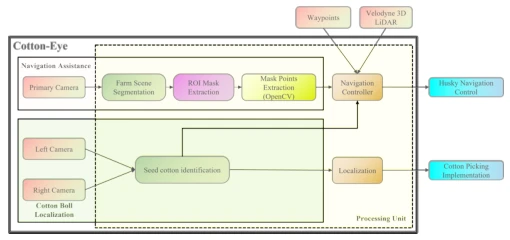
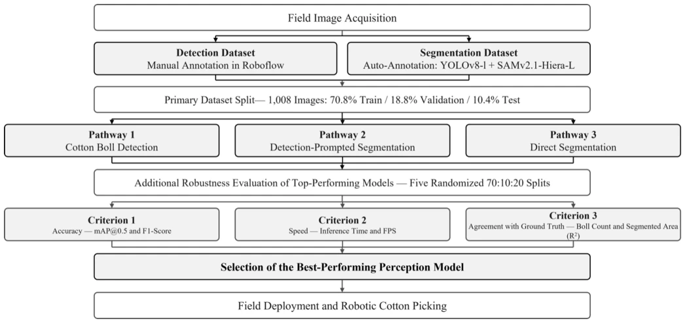
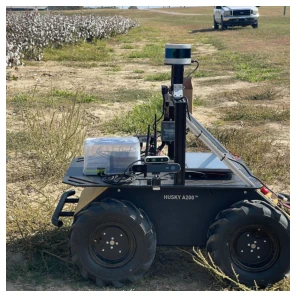
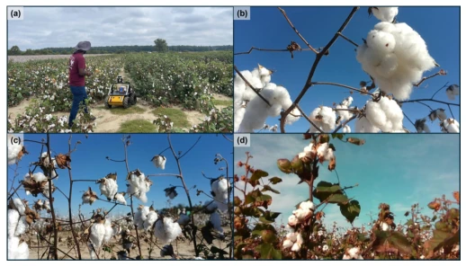
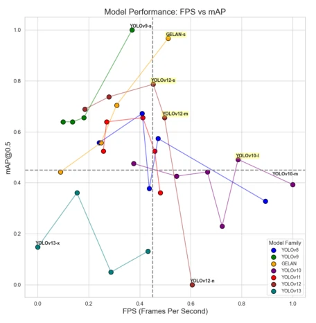
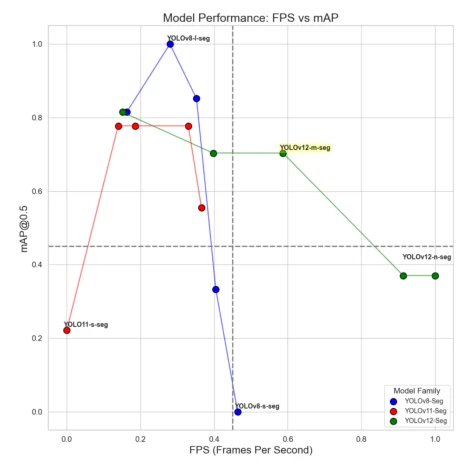
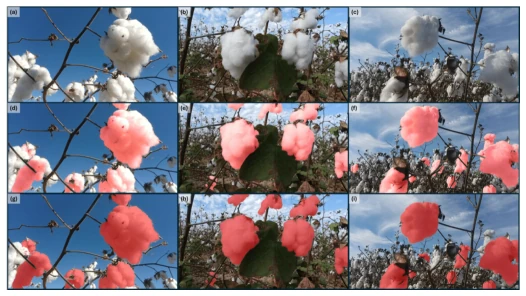
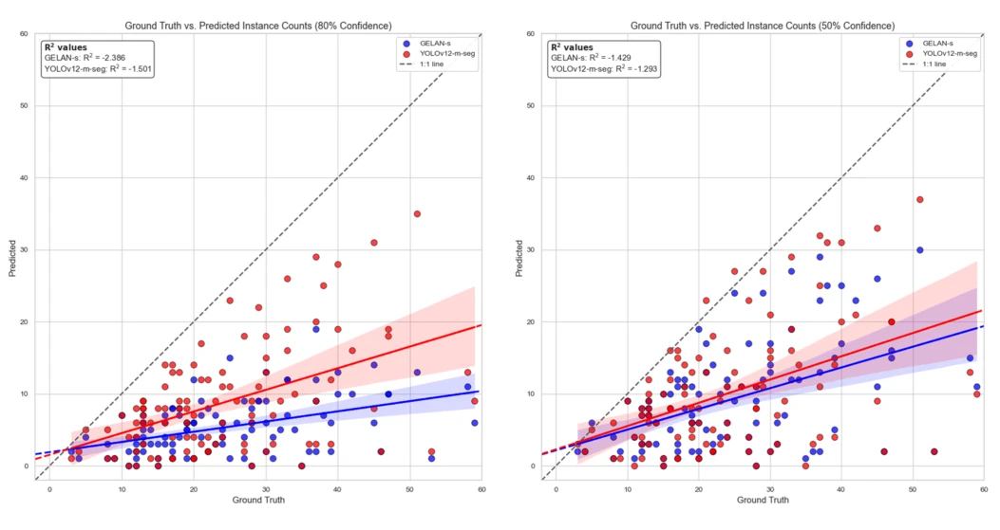
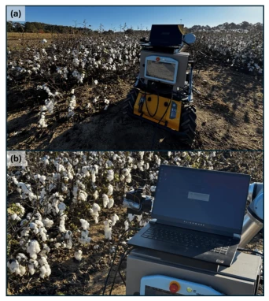
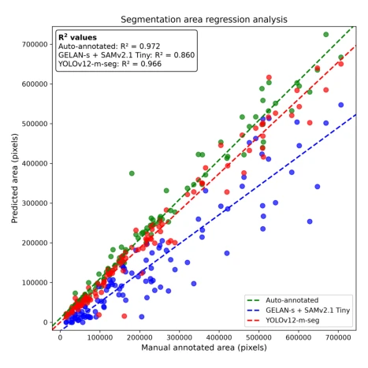

This paper conducts a comprehensive evaluation of cotton picking robots, bringing out the entire YOLOv8 to v13 suite for inspection, along with the SAM family. The highlight is YOLOv12-m-seg performing excellently in segmentation area consistency (R2=0.966), truly suitable for real-time picking. However, critically speaking: the counting ability remains subpar, with count-based R2 all being negative, implying the robot may miscount, leading to waste if picking too much or yield loss if picking too little. Although claiming field conditions, the dataset consists of only 1008 images, focusing solely on frontally visible cotton bolls, raising doubts about generalization in heavily occluded scenarios. With future models like YOLOv13 already available, counting remains unreliable; it seems visual perception is still a distance away from intelligent picking. Do not just focus on mAP, accurate counting is the critical factor. Although UR5e was used for field validation, the overall work remains at the perception layer, still far from true autonomous operation.
Traditional cotton harvesters are bulky and rely on chemical defoliants, causing soil compaction and quality decline [17, 18]. Existing research mostly focuses on cotton boll detection or segmentation, but often neglects real-time performance [21, 25]. For example, MRF-YOLO is accurate but inference is slow [21], UAV solutions have high costs and are greatly affected by lighting [22]. Some methods rely on artificial backgrounds, making field deployment unrealistic [26]. More critically, existing work pursues mAP, but ignores the impact of counting accuracy on robot decision-making, and lacks systematic comparison of the latest YOLO family (v8-v13) and SAM variants in real field environments. This study aims to fill this gap, evaluating the accuracy and speed balance of perception models under real lighting and weather, providing a reliable perception solution for lightweight autonomous picking robots.
The overall process is divided into data collection, model evaluation, and field validation. First, a Clearpath Husky equipped with three cameras was used to collect 1008 field images, with detection boxes manually annotated, and YOLOv8-l + SAMv2.1 assisted in generating segmentation masks. There are three core evaluation paths: 1) Pure detection: evaluate the YOLOv8-v13 series, selecting GELAN-s as the best detector; 2) Detection-prompted segmentation: use GELAN-s boxes to prompt SAM/SAMv2.1 to generate masks; 3) Direct segmentation: train YOLOv8/11/12-seg models. The innovation lies in building a benchmark test containing 33 YOLO detectors and various SAM variants, and introducing area consistency (R2) and counting consistency as key screening indicators, rather than just looking at mAP. In addition, 5 random dataset splits were employed to evaluate model robustness, avoiding single split bias. Finally, the real-time picking ability of YOLOv12-m-seg was verified in the field through a UR5e robotic arm and ZED2i camera, ensuring the model meets robot workspace and real-time constraints, achieving closed-loop verification from perception to execution.
The dataset contains 1008 field images, split 70/18.8/10.4 for training/validation/testing, and additionally performed 5 random splits to evaluate robustness. Baselines cover YOLOv8-v13 detectors and SAM, FastSAM, etc. segmentation models. Evaluation metrics include mAP@0.5, FPS, and R2 (area and counting). Results show GELAN-s has the best balance in detection (mAP 86.1%, 42.3ms); YOLOv12-m-seg outperformed in segmentation (AP@0.5 83.7%, 20.4ms, area R2 0.966). However, counting R2 of all models are negative values, indicating absolute quantity estimation is unreliable. Field experiments used a UR5e robotic arm to verify the effectiveness of YOLOv12-m-seg, proving it can achieve real-time detection and segmentation under different confidence levels, but counting error remains the deployment bottleneck.
其他图片Other Figures

Figure 1: Overview of the Cotton-Eye perception system integrated with the autonomous cotton picker, containing two modules: Navigation Assistance and Cotton Boll Localization.

Figure 2: High-level overview of the proposed cotton boll perception framework, including dataset preparation, the three model-evaluation pathways, robustness analysis, model-selection criteria, and field deployment for robotic cotton picking.

Figure 3: Clearpath’s Husky entering the cotton farm to capture images.

Figure 4: Image data acquisition (a) at the North Farm Research field, Mis- sissippi State University using (b) a right-facing OAK-D Pro; (c) a left-facing ZED2i; (d) a left-facing RealSense D435i.

Figure 7: Normalized mAP@0.5 and FPS values of the cotton boll detection models evaluated using the test dataset. Each marker group represents a YOLO model family, and each dot within a group represents a distinct detection-model variant. All evaluated variants are displayed, but only the candidate variants and selected lower-performing variants are labeled to prevent label overlap. The dashed horizontal and vertical lines indicate the reference value of 0.45 for normalized mAP@0.5 and normalized FPS, respectively. Model variants exceeding both reference values were retained for the randomized dataset split evaluation.

Figure 8: Normalized mAP@0.5 and FPS values of the direct YOLO-based cot- ton boll segmentation models. Each marker group represents a YOLO model family, and each dot within a group represents a distinct segmentation-model variant. All evaluated variants are displayed, but only the candidate variants and selected lower-performing variants are labeled to prevent label overlap. The dashed horizontal and vertical lines indicate the reference value of 0.45 for normalized mAP@0.5 and normalized FPS, respectively. YOLOv12-m-seg was the only model variant that exceeded both reference values.

Figure 9: Qualitative comparison of cotton boll segmentation produced by GELAN-s + SAMv2.1 Tiny and YOLOv12-m-seg. Panels (a), (b), and (c) show representative sunny, partially cloudy, and cloudy field images, respec- tively. Panels (d)–(f) show the corresponding GELAN-s + SAMv2.1 Tiny re- sults, while panels (g)–(i) show the YOLOv12-m-seg results.

Figure 10: Comparison of cotton boll counts produced by GELAN-s and YOLOv12-m-seg with the reference counts derived from the automatically annotated test masks at confidence levels of (a) 80% and (b) 50%.

Figure 12: Field evaluation of the developed robotic cotton picker using the Cotton-Eye perception system implemented with YOLOv12-m-seg. The exper- iments were conducted at the University of Georgia Hort Hill fields in Tifton, Georgia, from November 10 to 14, 2025.

Figure 11: Agreement between the manually annotated total cotton segmen- tation area and the areas obtained from the automatically annotated masks, YOLOv12-m-seg, and GELAN-s + SAMv2.1 Tiny. Segmented areas are re- ported in pixels.